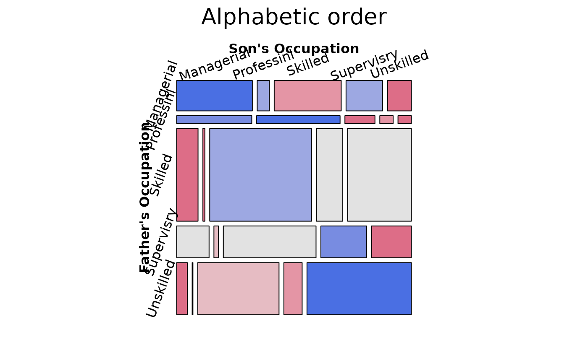

British Social Mobility from Glass(1954)
Glass.RdGlass(1954) gave this 5 x 5 table on the occupations of 3500 British fathers and their sons.
Usage
data("Glass")Format
A frequency data frame with 25 observations on the following 3 variables representing a 5 x 5 table with 3500 cases.
fathera factor with levels
ManagerialProfessionalSkilledSupervisoryUnskilledsona factor with levels
ManagerialProfessionalSkilledSupervisoryUnskilledFreqa numeric vector
Details
The occupational categories in order of status are: (1) Professional & High Administrative (2) Managerial, Executive & High Supervisory (3) Low Inspectional & Supervisory (4) Routine Nonmanual & Skilled Manual (5) Semi- & Unskilled Manual
However, to make the point that factors are ordered alphabetically by default, Friendly & Meyer (2016) introduce this data set in the form given here.
References
Bishop, Y. M. M. and Fienberg, S. E. and Holland, P. W. (1975). Discrete Multivariate Analysis: Theory and Practice, MIT Press.
Friendly, M. and Meyer, D. (2016). Discrete Data Analysis with R: Visualization and Modeling Techniques for Categorical and Count Data. Boca Raton, FL: Chapman & Hall/CRC. http://ddar.datavis.ca.
Examples
data(Glass)
glass.tab <- xtabs(Freq ~ father + son, data=Glass)
largs <- list(set_varnames=list(father="Father's Occupation",
son="Son's Occupation"),
abbreviate=10)
gargs <- list(interpolate=c(1,2,4,8))
mosaic(glass.tab,
shade=TRUE,
labeling_args=largs,
gp_args=gargs,
main="Alphabetic order",
legend=FALSE,
rot_labels=c(20,90,0,70))

# reorder by status
ord <- c(2, 1, 4, 3, 5)
mosaic(glass.tab[ord, ord],
shade=TRUE,
labeling_args=largs,
gp_args=gargs,
main="Effect order",
legend=FALSE,
rot_labels=c(20,90,0,70))